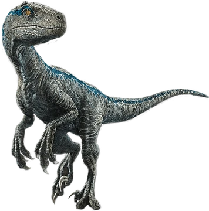

Velociraptor

Introducción
El Velociraptor es un género de dinosaurio terópodo que vivió durante el período Cretácico, hace aproximadamente 75 millones de años. Es uno de los dinosaurios carnívoros más conocidos y ha capturado la imaginación de las personas debido a su apariencia y comportamiento.
Características
- El Velociraptor era un dinosaurio bípedo, lo que significa que caminaba sobre dos patas.
- Medía aproximadamente 2 metros de longitud y pesaba alrededor de 15 kilogramos.
- Tenía garras afiladas en las patas traseras, que utilizaba para atrapar a sus presas.
- Se cree que eran animales ágiles y veloces, capaces de cazar en manada.
Hechos Interesantes
- El Velociraptor es conocido por su aparición en la famosa película "Jurassic Park," aunque en la película se exagera su tamaño.
- Los científicos han encontrado evidencia de que los velocirraptores eran depredadores inteligentes y sociales.
- Se ha descubierto que tenían plumas, lo que sugiere que tenían una apariencia más parecida a las aves que a los reptiles.
Descubrimiento
El Velociraptor fue descubierto por primera vez en Mongolia en la década de 1920. Desde entonces, se han encontrado fósiles de velocirraptores en varias partes del mundo, lo que ha ayudado a los paleontólogos a aprender más sobre estos fascinantes dinosaurios.
El Velociraptor es un ejemplo intrigante de la diversidad de la vida prehistórica y sigue siendo objeto de estudio e interés en la paleontología.